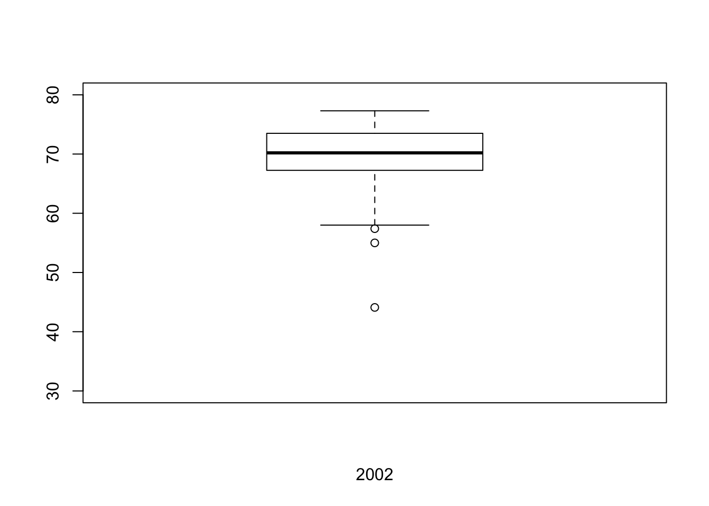

library(histogram)
library(plyr)homeownership = read.table("./data/ex3-11.TXT", header = T)
hiv = read.table("./data/ex3-76.TXT", header = T)## X1985
par(mfrow=c(3,1))
hist(homeownership$X1985, freq = F, right = F, ylim = c(0, 0.12),
xlim = c(30, 100), xlab = "1985", ylab = "Relative Frequency",
main = "", breaks = 20)
## X1996
hist(homeownership$X1996, freq = F, right = F, ylim = c(0, 0.12),
xlim = c(30, 100), xlab = "1996", ylab = "Relative Frequency",
main = "", breaks = 20)
## X2002
hist(homeownership$X2002, freq = F, right = F, ylim = c(0, 0.12),
xlim = c(30, 100), xlab = "2002", ylab = "Relative Frequency",
main = "", breaks = 20)The three histograms have similar shape. The average homeownship rate has increased since 1985.
colMeans(homeownership[,2:4])## X1985 X1996 X2002
## 65.87647 66.84314 69.44902Increases in families incomes so more people can purchase homes.
The average homeship rate increases from 65.87% to 69.44% from 1985 to 2002. This is very small inscrease in a long time period. The Congress should write laws to increase tax deductions so that more people can purchase homes.
Stem-and-leaf plots
stem(homeownership$X1985)##
## The decimal point is 1 digit(s) to the right of the |
##
## 3 | 7
## 4 |
## 4 |
## 5 | 014
## 5 | 7
## 6 | 1111122344
## 6 | 5667777888888899999
## 7 | 0000000011122234
## 7 | 6stem(homeownership$X1996)##
## The decimal point is 1 digit(s) to the right of the |
##
## 4 | 0
## 4 |
## 5 | 13
## 5 | 57
## 6 | 1222333
## 6 | 5555777778888888999999
## 7 | 000112233333344
## 7 | 57stem(homeownership$X2002)##
## The decimal point is 1 digit(s) to the right of the |
##
## 4 | 4
## 4 |
## 5 |
## 5 | 578
## 6 | 034
## 6 | 666777789999
## 7 | 000000000222222333444444
## 7 | 55566777Both the stem-and-leaf and histogram for all three years are asymmetrical, unimodal and left skewed.
Boxplots
boxplot(homeownership$X1985, xlab="1985", ylim=c(30, 80))boxplot(homeownership$X1996, xlab="1996", ylim=c(30, 80))boxplot(homeownership$X2002, xlab="2002", ylim=c(30, 80))
Three boxplots are all asysmmetric and left skewed.
Boxplots give the same information from the stem-and-leaf and histograms in 3.11: asysmmetric and left skewed data for all three years.
colMeans(homeownership[,2:4])## X1985 X1996 X2002
## 65.87647 66.84314 69.44902colwise(median)(homeownership[,2:4])## X1985 X1996 X2002
## 1 67.9 68.2 70.2colwise(sd)(homeownership[,2:4])## X1985 X1996 X2002
## 1 6.734407 6.688027 6.162901The median is more approriate than the mean for these data sets, because the data sets are skewed
The variability continously descreased since 1985.
y = c(homeownership$X1985, homeownership$X1996, homeownership$X2002)
x = rep(c("X1985", "X1996", "X2002"), each=nrow(homeownership))
boxplot(y~x)The median hownownership rate continously increased from 1985 to 2002
The variation hownownership rate continously decreased from 1985 to 2002.
No.
Mean, median and standard deviation
data.frame(mean=mean(hiv$HIV_RNA),
median=median(hiv$HIV_RNA),
std=sd(hiv$HIV_RNA))## mean median std
## 1 61667.95 13956.5 117539.325%, 50% and 75% percentiles
quantile(hiv$HIV_RNA)[2:4]## 25% 50% 75%
## 9967.00 13956.50 56975.75boxplot(hiv$HIV_RNA, main="HIV RNA")hist(hiv$HIV_RNA, xlab="HIV RNA", main="",
ylim=c(0,20), breaks=10)The distribution is unimodal and right skewed.